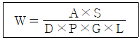
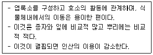
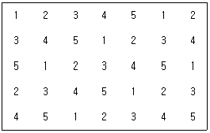
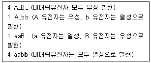
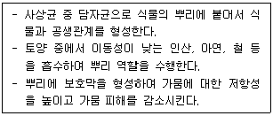
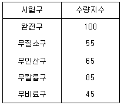

임업종묘기사 (2014-08-17 기출문제)
1과목: 조림학
1. Möller의 항속림 사상의 강조 내용으로 옳은 것은?
- 갱신은 인공갱신을 원칙으로 한다.
- 정해진 윤벌기에 군상목택벌을 원칙으로 한다.
- 개벌을 금하고 해마다 간벌형식의 벌채를 반복한다.
- 벌채목의 선정은 산벌작업의 선정기준에 준해서 한다.
(정답률: 알수없음)

2. 종자의 발아휴면성과 관계가 없는 것은?
- 이중휴면성
- 종피불투수성
- 종자의 지나친 성숙
- 생장억제물질의 존재
(정답률: 알수없음)
3. 토양에서 부식(Humus)의 기능에 대한 설명으로 옳지 않은 것은?
- 염기치환용량을 증대시킨다.
- 토양의 완충능을 증대시킨다.
- 토립을 연결시켜 안정한 입단구조를 형성한다.
- 토양을 갈색 또는 암색으로 변화시키며 토양 온도를 낮춘다.
(정답률: 알수없음)
4. 다음 중 내음력이 가장 강한 수종은?
- 주목
- 향나무
- 사시나무
- 물푸레나무
(정답률: 알수없음)
5. 건조에 의해 생활력을 쉽게 잃게 되는 종자를 저장하는데 가장 적합한 방법은?
- 노천매장법
- 실내창고 저장법
- 저온밀봉 저장법
- 저온건조제 사용 저장법
(정답률: 알수없음)
6. 다음 중 모수작업의 일종인 것은?
- 중림작업
- 두목작업
- 보잔목작업
- 대상초벌작업
(정답률: 알수없음)
7. 다음 중 개화시기가 가장 늦은 수종은?
- 주목
- 은행나무
- 구상나무
- 개잎갈나무
(정답률: 알수없음)
8. 겉씨식물의 특징에 대한 설명으로 옳지 않은 것은?
- 배주가 심피에 싸여 있다.
- 배유의 염색체는 반수체(n)이다.
- 꽃잎, 꽃받침, 수술, 암술이 없다.
- 수체 내의 수분 이동은 헛물관(가도관)을 통하여 이루어진다.
(정답률: 알수없음)
9. 장미과에 속하는 수종이 아닌 것은?
- 조팝나무
- 자귀나무
- 벚나무
- 마가목
(정답률: 알수없음)
10. 다음 공식은 종자 m2당 파종량을 산정하기 위한 공식이다. A×S를 옳게 설명한 것은?

- 순량율과 발아세를 곱한 값이다.
- 발아율과 파종 면적을 곱한 값이다.
- 종자입수에 파종 면적을 곱한 값이다.
- 파종면적에 m2당 묘목의 잔존본수를 곱한 값이다.
(정답률: 알수없음)
11. 솎아베기(간벌)의 효과로 거리가 먼 것은?
- 간벌 수확을 얻을 수 있다.
- 생산될 목재의 형질이 향상된다.
- 옹이가 없는 완만재로 목재가치가 높아진다.
- 임목의 건강성을 향상시켜 병충해에 대한 저항력을 높인다.
(정답률: 알수없음)
12. 소나무 종자의 용적중이 500g/L, 실중이 10g, 순량률이 90%, 발아율이 50%일 경우에 이 종자의 효율은?
- 45%
- 50%
- 85%
- 90%
(정답률: 알수없음)
13. 잣나무를 폭 5m, 열 5m 간격으로 5ha에 정방형으로 조림하고자 할 때 필요한 묘목 본수는?
- 200본
- 1000본
- 2000본
- 10000본
(정답률: 알수없음)
14. 화성암 중 땅속 깊은 곳에서 생성되고 입상조직을 나타내며 양료의 함량이 비교적 적은 산성암류는?
- 사암
- 화강암
- 현무암
- 편마암
(정답률: 알수없음)
15. 생가지치기를 하는 경우 절단면이 썩을 위험성이 가장 큰 수종은?
- 사시나무
- 단풍나무
- 소나무
- 삼나무
(정답률: 알수없음)
16. 용기(container) 육묘에 대한 설명으로 옳지 않은 것은?
- 포트대의 높이는 지면에서 60~80cm 정도 위치가 좋다.
- 물주기를 할 때 지하수나 수돗물을 자주 주는 것이 필요하다.
- 포트대 아래는 공기 순환이 잘되도록 하여 뿌리의 썩음이 없도록 주의해야 한다.
- 포트대를 설치하는 이유 중 하나는 포트 밖으로 나온 뿌리가 땅속으로 뻗지 않도록 하기 위해서이다.
(정답률: 알수없음)
17. 광합성 색소인 카로테노이드(carotenoids)에 관한 설명으로 옳지 않은 것은?
- 식물에서 노란색, 오렌지색, 적색 등을 나타내는 색소이다.
- 광도가 높을 경우 광산화작용에 의한 엽록소의 파괴를 방지한다.
- 엽록소를 보조하여 햇빛을 흡수함으로써 광합성시 보조색소 역할을 담당한다.
- 식물체내에 있는 색소 중에서 광질에 반응을 나타내며, 광주기 현상과 관련된다.
(정답률: 알수없음)
18. 묘목의 뿌리가 천근성이기 때문에 단근작업을 생략해도 되는 수종은?
- 곰솔
- 소나무
- 굴참나무
- 느티나무
(정답률: 알수없음)
19. 아래의 설명에 해당하는 것은?

- Mg
- Ca
- N
- K
(정답률: 알수없음)
20. 풀베기 작업에 대한 설명으로 옳지 않은 것은?(문제 오류로 확정답안 발표시 3, 4번이 정답처리 되었습니다. 여기서는 3번을 누르시면 정답 처리 됩니다.)
- 일반적으로 5~7월에 실시한다.
- 연 2회 실시할 경우 8월에 추가로 실시할 수 있다.
- 군상식재지 등 조림목의 특별한 보호가 필요한 경우 줄베기를 실시한다.
- 한해 및 풍해의 위험성이 있는 지역에서는 9월 이후에 실시하는 것이 좋다.
(정답률: 알수없음)
2과목: 임목육종학
21. 천연적인 분포지역이 대단히 넓어서 지리적 원인의 유전변이가 가장 큰 수종은?
- 편백
- 구주소나무
- 일본잎갈나무
- 라디아타소나무
(정답률: 알수없음)
22. 조기검정의 방법에 해당하지 않은 것은?
- 속성육묘법
- 효소분석법
- 생육기간 측정법
- 옥신 함량분석법
(정답률: 알수없음)
23. DNA를 구성하는 염기성분이 아닌 것은?
- Uracil
- Thymine
- Guanine
- Adenine
(정답률: 알수없음)
24. 조직배양법에 의해 반수체를 만들고 염색체를 배가하여 짧은 기간에 개체를 만드는 것은?
- 배배양
- 순계육성
- 세포융합
- 무성번식
(정답률: 알수없음)
25. 다음 도면은 채종원 5개 클론을 7반복으로 배치한 예이다. 이 배치의 특성으로 옳은 것은?

- 완전임의배치로서 오차가 적다.
- 난괴법 배치로 정확도가 높다.
- 동일 클론을 가능한 한 멀리 배치한 기계적 배치법이다.
- 항상 동일 내용의 클론을 동일 수로 임의 식재하는 방법이다.
(정답률: 알수없음)
26. 식재지도에 포함되어야 하는 사항으로 옳지 않은 것은?
- 위치 표시
- 경영계획도
- 식재지 실제지도
- 수종, 모양, 실험계획
(정답률: 알수없음)
27. 키메라(chimera)의 소멸 방법으로 옳지 않은 것은?
- 종자의 이용
- 부정아의 이용
- 가지 기부(잠복아)의 이용
- 단세포 또는 조직배양의 이용
(정답률: 알수없음)
28. 천연림의 침엽수 수형목 선발 기준으로 옳지 않은 것은?
- 상당량의 종자가 달릴 것
- 도로변의 나무 혹은 고립목은 제외
- 수령은 될 수 있으면 15년 이상일 것
- 수관이 좁고 가지가 가늘며 한쪽으로 치우치지 말 것
(정답률: 알수없음)
29. 카탈라제(catalase)에 대한 설명으로 옳은 것은?
- 탄수화물을 환원시키는 효소이다.
- 활동이 클수록 영양생장이 활발해진다.
- 세포 내 호흡작용을 억제하는 작용을 한다.
- 전자(electron)의 수용체 역할을 하는 특수 효소이다.
(정답률: 알수없음)
30. 넓은 의미의 유전력에 대한 설명으로 가장 적합한 것은?
- 전체 임목에 대한 수형목의 비율
- 전체 분산에 대한 표준오차의 비율
- 전체 표현형분산에 대한 유전분산의 비율
- 각종 유전특성에 대하여 유전될 수 있는 특성의 비율
(정답률: 알수없음)
31. 서로 다른 두 식물의 세포벽을 용해시켜 노출된 세포막에 고분자화합물로 삼투압을 높이거나 전기충격 등을 이용해 원형질체를 융합하여 새로운 생물체를 만드는 기술을 무엇이라고 하는가?
- 세포융합
- 조직배양
- 형질전환
- 유전자조작
(정답률: 알수없음)
32. 유전정보의 발현에 대한 과정 중 올바른 순서는?
- DNA복제 → DNA전사 → mRNA해독 → 유전인자 발현
- DNA복제 → mRNA해독 → DNA전사 → 유전인자 발현
- mRNA해독 → DNA전사 → DNA복제 → 유전인자 발현
- mRNA해독 → DNA복제 → DNA전사 → 유전인자 발현
(정답률: 알수없음)
33. 양성잡종 AaBb 개체에 대해 이중열성 개체로 검정교배 하여 다음과 같이 표현형 분리비를 얻었다면 염색체조환율은?

- 0.1
- 0.2
- 0.4
- 0.8
(정답률: 알수없음)
34. 유전자 A와 B는 대립 유전자가 아니지만 A는 B에 대하여 우성이다. 이 관계를 나타내는 용어로 가장 적합한 것은?
- 상위성
- 우성적
- 초우성
- 상가적
(정답률: 알수없음)
35. 양친과 후대간의 유전상관이 가장 높은 경우는?
- 산지 시험목
- 전형매 차대검정목
- 반형매 차대검정목
- 집단선발 차대검정목
(정답률: 알수없음)
36. 어떤 산지시험 Plot당 개체수가 각 50개체이고, 각 Plot에서 임의로 2개체씩 모두 10개체를 택하는 추출방법은?
- 계통추출법
- 층화표본추출법
- 단순표본추출법
- 집략표본추출법
(정답률: 알수없음)
37. 개화결실 촉진기술로 주로 사용하지 않은 것은?
- 접목법
- 환상박피
- 콜히친 처리
- 지베렐린 처리
(정답률: 알수없음)
38. 종묘채종원 또는 클론채종원에 대하여 바르게 기술하고 있는 것은?
- 종묘채종원은 차대검정을 별도로 실시해야 한다.
- 클론채종원은 한번 조성하여 2세대 이상의 선발이 가능하다.
- 종묘채종원은 채종원 내 유전자의 폭을 넓히는데 유리하다.
- 클론채종원은 서로 친적 관계에 있는 나무들 간에 교배될 가능성이 높다.
(정답률: 알수없음)
39. 비대립유전자와 관련이 없는 것은?
- 복합유전
- 연쇄유전
- 독립유전
- 상가적유전
(정답률: 알수없음)
40. 3배체 유도 및 이용 목적으로 옳은 것은?
- 무성번식이 잘되기 때문
- 생장은 느리나 화학적 성분이 많아지기 때문
- 생장은 느리나 많은 종자를 결실하게 되기 때문
- 종자는 결실치 못하나 영양생장이 왕성하기 때문
(정답률: 알수없음)
3과목: 산림보호학
41. 벚나무 빗자루병의 병원체는 다음 중 어느 균류에 해당되는가?
- 조균류
- 자낭균류
- 담자균류
- 불완전균류
(정답률: 알수없음)
42. 잣나무 털녹병의 중간기주에 발생하는 포자형태가 아닌 것은?
- 녹포자
- 담자포자
- 겨울포자
- 여름포자
(정답률: 알수없음)
43. 산불에 의한 토양피해 양상이 아닌 것은?
- 토양 공극률 감소
- 유효 광물질 유실
- 지하 저수기능 증가
- 호우시 일시적인 지표유하수 증가
(정답률: 알수없음)
44. 밤나무혹벌에 대한 설명으로 옳지 않은 것은?
- 충영형성 해충이다.
- 유충으로 월동한다.
- 1년에 2회 발생한다.
- 천적으로는 중국긴꼬리좀벌 등이 있다.
(정답률: 알수없음)
45. 포식기생충이 다른 포식기생충에 기생하는 형태를 무엇이라 하는가?
- 중기생
- 다포식기생
- 내부포식기생
- 제1차포식기생
(정답률: 알수없음)
46. 아황산가스의 식물체 내 유입은 주로 어느 곳을 통하는가?
- 기공
- 통도조직
- 해면조직
- 책상조직
(정답률: 알수없음)
47. 토양의 결빙과 해동이 반복되면서 묘목의 뿌리가 지상부로 뽑혀 올라오지만, 땅이 녹은 이후 뿌리가 지표면 아래로 내려가지 못해 결국 말라죽게 되는 수목피해를 무엇이라고 하는가?
- 상렬
- 열공
- 동상
- 상주
(정답률: 알수없음)
48. 산불이 발생한 지역에서 많이 발생할 것으로 예측되는 병은?
- 모잘록병
- 자주빛날개무늬병
- 리지나뿌리썩음병
- 아밀라리아뿌리썩음병
(정답률: 알수없음)
49. 세균에 의한 수목병으로 옳은 것은?
- 소나무 잎녹병
- 밤나무 뿌리혹병
- 포플러 모자이크병
- 오동나무 빗자루병
(정답률: 알수없음)
50. 흰가루병에 걸린 병환부 위에 가을철에 나타는 표징으로 흑색의 알갱이가 보이는데, 이것은 무엇인가?
- 포자각
- 자낭구
- 병자각
- 분생자병
(정답률: 알수없음)
51. 밤바구미에 관한 설명으로 옳지 않은 것은?
- 경제적 피해 수종은 주로 밤나무이다.
- 땅 속에서 유충의 형태로 월동한 후에 번데기가 된다.
- 밤껍질 밖으로 배설물을 방출하므로 쉽게 알 수 있다.
- 유충이 밤이나 도토리의 과육을 식해하여 피해를 준다.
(정답률: 알수없음)
52. 수목의 자연개구부를 통해 감염하는 병원균은?
- 낙엽송 끝마름병균
- 소나무 잎떨림병균
- 오동나무 빗자루병균
- 밤나무 줄기마름병균
(정답률: 알수없음)
53. 녹병의 기주교대 식물로 올바르게 짝지어진 것은?
- 소나무와 향나무
- 소나무와 송이풀
- 잣나무와 배나무
- 일본잎갈나무와 포플러류
(정답률: 알수없음)
54. 소나무재선충병에 대한 설명으로 옳지 않은 것은?
- 매개충은 솔수염하늘소 단일종이다.
- 감염된 수목은 빠르면 수주 내에 고사한다.
- 매개충이 소나무류의 수목을 식해할 때 침입한다.
- 우리나라에서 소나무재선충에 의한 피해는 부산의 금정산에서 처음 발견되었다.
(정답률: 알수없음)
55. 모잘록병 방제를 위한 설명으로 옳지 않은 것은?
- 질소질 비료를 많이 준다.
- 병든 묘목은 발견 즉시 뽑아 태운다.
- 병이 심한 묘포지는 돌려짓기를 한다.
- 묘상이 과습하지 않도록 배수와 통풍에 주의한다.
(정답률: 알수없음)
56. 약제 살포시 천적에 대한 피해가 가장 적은 살충제는?
- 훈증제
- 접촉제
- 소화 중독제
- 침투성 살충제
(정답률: 알수없음)
57. 서로 다른 환경유형이 인접한 공간으로, 인접한 양쪽 환경유형을 다른 목적으로 이용하는 동물들에게 중요한 미세서식지로 제공되는 공간은?
- 피난처
- 임연부
- 세력권
- 행동권
(정답률: 알수없음)
58. 어린 유충은 초본의 줄기 속을 식해하지만 성장한 후 나무로 이동하여 수피와 목질부를 가해하는 해충은?
- 솔나방
- 매미나방
- 박쥐나방
- 미국흰불나방
(정답률: 알수없음)
59. 아까시잎혹파리의 월동형태로 옳은 것은?
- 알
- 유충
- 성충
- 번데기
(정답률: 알수없음)
60. 7월 하순 이후 참나무류의 종실이 달린 가지가 땅에 많이 떨어져 있다면 이것은 어떤 해충의 피해인가?
- 왕거위벌레
- 도토리바구미
- 밤나무재주나방
- 도토리거위벌레
(정답률: 알수없음)
4과목: 토양학 및 비료학
61. 다음 보기의 설명으로 알맞은 토양 미생물은?

- 균근균(mycorrhizal fungi)
- 방선균(actinomycetes)
- 조류(algae)
- 진균(fungi)
(정답률: 알수없음)
62. 토양공기가 대기보다 CO2 함량이 높은 이유가 아닌 것은?
- 미생물의 호흡
- 작물의 호흡
- 유기물의 분해
- 하부층으로부터의 공급
(정답률: 알수없음)
63. 우리나라에 가장 많이 분포하고 있는 암석은?
- 화강암
- 석회암
- 응회암
- 현무암
(정답률: 알수없음)
64. 다음 중 탈질작용(脫窒作用)이 가장 일어나기 쉬운 경우는?
- 전층 시비를 했을 때
- 삼층 시비를 했을 때
- 환원층 시비를 했을 때
- 산화층 시비를 했을 때
(정답률: 알수없음)
65. 토양에 있어 수용성 산성 물질이 지니고 있는 수소이온(H+)으로 해리되어 나타나는 산성은?
- 잠산성(潛酸性)
- 활산성(活酸性)
- 가수산성(加水酸性)
- 치환산성(置換酸性)
(정답률: 알수없음)
66. 생성 연대가 오래된 토양단면에 토양 교질물이 집적된 층위를 찾아볼 수 있어 집적층 이라고도 하는 층위의 명칭은?
- A층
- B층
- C층
- D층
(정답률: 알수없음)
67. 다음 중 유효수분의 pF 범위값으로 옳은 것은?
- 1.4 ~ 2.5
- 1.7 ~ 3.2
- 2.5 ~ 4.5
- 4.5 ~ 5.7
(정답률: 알수없음)
68. 반육성부식(semi-terrestrial humus)중 대표적인 것은?
- 멀(mull)
- 모더(moder)
- 이탄(peat)
- 부이(sapropel)
(정답률: 알수없음)
69. 어느 토양의 소성한계(plastic limit ; PL)가 40%이고 액성한계(liquid limit ; LL)가 60%일 때 이 토양의 소성계수(plastic index 또는 plastic number) 값은?
- 20
- 33
- 60
- 67
(정답률: 알수없음)
70. 양이온 이액순위에 대한 설명으로 옳은 것은?
- 이온의 크기가 클수록 치환 침입력이 크다.
- 원자가가 높을수록 치환 침입력이 크다.
- 이온의 수화도가 클수록 치환 침입력이 크다.
- 유리 양이온의 농도가 낮을수록 치환 침입력이 크다.
(정답률: 알수없음)
71. 다음 비료 중 고농도 비료로 볼 수 없는 것은?
- 메타인산칼슘
- 3중과인산
- 액체암모늄
- Oxyamide
(정답률: 알수없음)
72. 흡수율(이용률)이 가장 높으나 토양 중 유실되는 양도 많은 비료는?
- 질소질 비료(N)
- 인산질 비료(P2O5)
- 칼륨질 비료(K2O)
- 고토질 비료(MgO)
(정답률: 알수없음)
73. 양분결핍현상이 생육초기에 일어나기 쉬우며 새잎에 황화현상이 나타나고 엽맥사이가 비단무늬 모양으로 되는 것은 어떤 원소가 결핍된 것인가?
- Mn
- Fe
- Zn
- Cu
(정답률: 알수없음)
74. 비료 공정규격상 석회질 비료에 속하지 않는 것은?
- 소석회
- 석회질소
- 석회고토분말
- 패화석 분말
(정답률: 알수없음)
75. 다음 중 비료를 배합하였을 때 유리한 경우는?
- 과린산석회 + 석회질소
- 인분뇨 + 토머스인비
- 중과인산석회 + 토머스인비
- 골분 + 생석회
(정답률: 알수없음)
76. 식물 생산에 있어서 양분량의 증가에 대한 수량의 비율은 일정한 것이 아니라 양분량이 어느 이상이 되면 그 증수비율은 점차 감소되므로 시비량을 결정할 때 유의해야 한다. 다음 중 어느 것에 대한 설명인가?
- 보수점감의 법칙
- Wolff의 법칙
- 최소율
- 우세의 원리
(정답률: 알수없음)
77. 비료의 3요소 시험을 하였더니 다음과 같은 수량 지수가 얻어졌다. 이 때 3요소 공력효과(共力效果)는 얼마인가?

- 25
- 35
- 45
- 55
(정답률: 알수없음)
78. 암모니아태 질소 비료를 논토양의 산화층에 시용 하면 어떠한 변화가 일어나기 쉬운가?
- 점토광물에 의한 고정작용
- 유기질소의 무기화 작용
- 탈질작용
- 질산태 질소의 산화작용
(정답률: 알수없음)
79. 다음 비료 중 수용액이 중성을 나타내는 것은?
- 석회질소
- 과인산석회
- 질산암모늄
- 용성인비
(정답률: 알수없음)
80. 식물생육에 필요한 필수원소 및 미량원소 성분이 아닌 것은?
- Mn
- Co
- S
- B
(정답률: 알수없음)